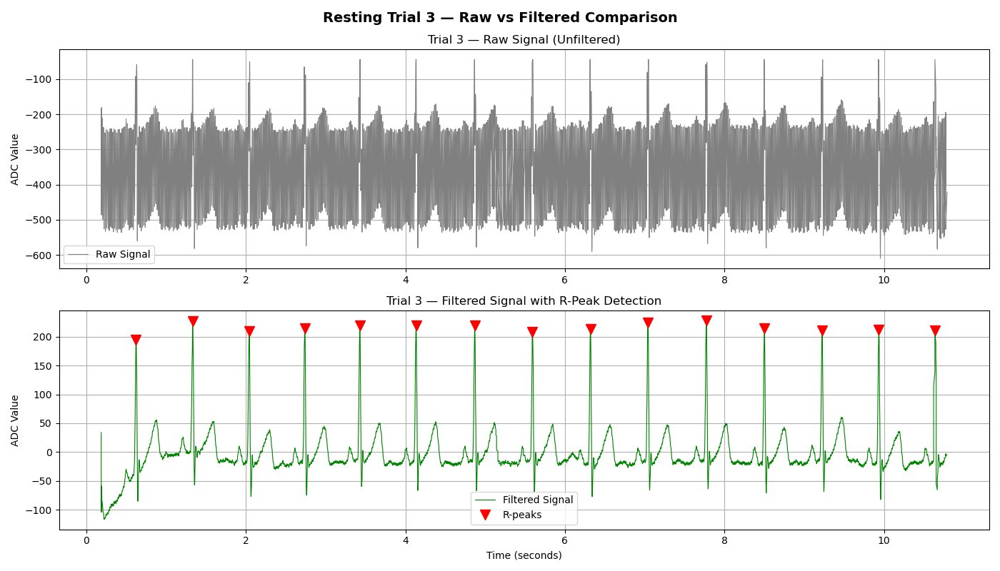
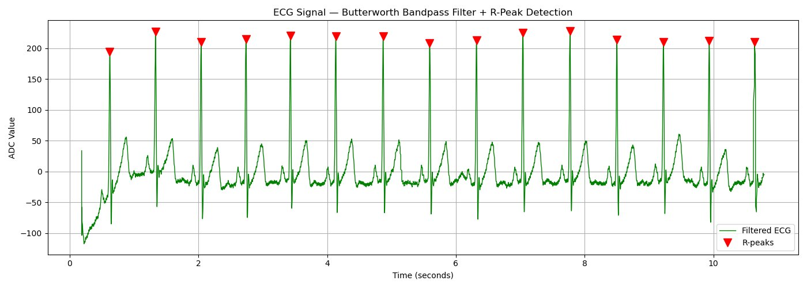
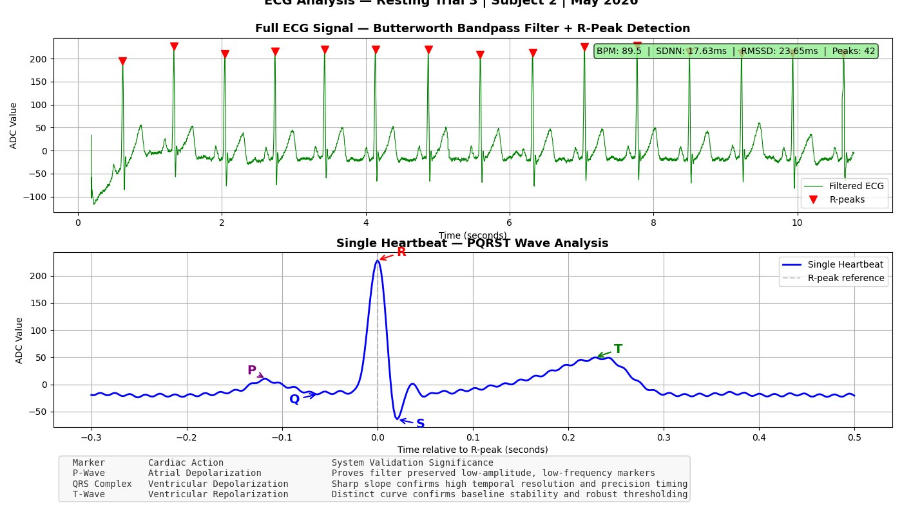

Developer, Researcher, & Community Organizer.
I build intelligent systems that bridge software, hardware, and real-world decision making.
My work focuses on AI, embedded systems, automation, and human-centered engineering.
Investigating Low-Cost Biosensing Fidelity — can $20 open-source components achieve clinical-grade diagnostic accuracy through math and code? Results show clean PQRST wave isolation, automated R-peak detection, and clinically meaningful HRV metrics.

Real-time ECG signal captured using SparkFun AD8232 and Arduino Uno R4 Minima at 533Hz. Signal processed through a Butterworth bandpass filter (0.5–40Hz) with automated R-peak detection. Resting heart rate: ~89 BPM.


Single heartbeat PQRST wave analysis. P-wave (atrial depolarization), QRS complex (ventricular depolarization), and T-wave (ventricular repolarization) are clearly isolated — confirming filter fidelity and signal resolution at 533Hz.
AD8232 ECG Sensor + Arduino Uno R4 Minima · 533Hz sampling rate# Butterworth bandpass filter + R-peak detection # Hardware: SparkFun AD8232 + Arduino Uno R4 Minima @ 533Hz import numpy as np from scipy.signal import butter, filtfilt, find_peaks import pandas as pd def butter_bandpass_filter(data, lowcut=0.5, highcut=40.0, fs=533, order=4): nyq = 0.5 * fs b, a = butter(order, [lowcut / nyq, highcut / nyq], btype='band') return filtfilt(b, a, data) # Load + preprocess (skip first 2s for signal stabilization) df = pd.read_csv('resting_trial_3.csv') raw = -np.clip(df['ecg_value'].values[int(2*533):], np.percentile(df['ecg_value'], 1), np.percentile(df['ecg_value'], 99)) # Filter + detect R-peaks filtered = butter_bandpass_filter(raw) peaks, _ = find_peaks(filtered, distance=int(0.6 * 533), height=np.median(filtered) + 0.5 * np.std(filtered))
I asked my dad to give more to a man holding a cardboard sign between cars. He said: "If you really want to help, find a place that does it the right way."
That gap — between wanting to help and actually helping — is what pushed me toward Open Door Ministries, nonprofit systems, and building technology that serves real communities.
The night before our FTC competition, our autonomous robot kept drifting. The code was correct. The hardware disagreed.
Hours of motor telemetry and PID tuning later, we cut positioning error by ~30%. That night taught me that the gap between software and physical systems is where the most interesting engineering lives.
Web app classifying 700+ US occupations by AI automation risk, with explainability, career comparison, and skill recommendations.
Centralized coordination system for nonprofit volunteer management — dashboard, calendar, roster, and push notifications.
I'm currently exploring opportunities in biomedical engineering, intelligent systems, and computational healthcare while continuing to develop projects that connect technology with meaningful real-world impact.